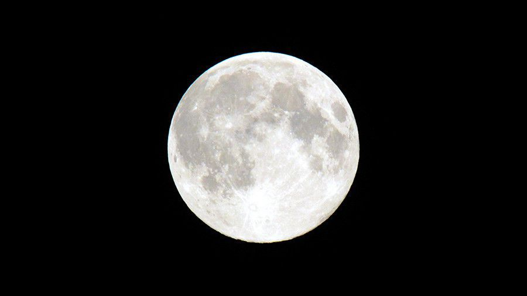

Знайомство із Сонячною системою



На головну
Сонце
Центральне тіло нашої планетної системи – Сонце . Утіленням
Сонця в грецькій міфології був бог Апполон.
У надрах Сонця за температури в десятки мільонів градусів Цельсія
та величезного тиску відбуваються так звані термоядерні реакції.
Вони супроводжуються виділенням великої кількості енергії.
Щосекунди Сонце випромінює таку кількість тепла, якого б
вистачило розтопити шар льоду заввишки тисячу
кілометрів.
Термоядерні реакції продовжуватимуться, поки в ядрі
Сонця не вичерпаються запаси Гідрогену. Нині вони
складають близько 60 % маси Сонця. Такої кількості
вистачить щонайменше на кілька десятків мільярдів років.
Наше Сонце – джерело не тільки тепла та світла. Його
зовнішні зони – фотосфера, хромосфера та корона –
випромінюють потоки невидимих
ультрафіолетових і рентгенівських променів, які впливають на
характер процесів у земній атмосфері. Ще багато років тому вчені
помітили, що активність Сонця підпорядковується своєрідним
циклам, протягом яких вона досягає максимального значення, а
потім знову спадає. Це відбувається приблизно кожні 11 років. У
роки максимальної сонячної активності збільшується кількість плям
та спалахів на поверхні світила, невидиме випромінювання досягає
найбільшої інтенсивності. У цей час на Землі виникають магнітні бурі, відбуваються
порушення радіозв’язку.
Характеристики Сонця
- Діаметр – 1 392 000 км
- Період обертання навколо осі – 27 діб
- Маса – 332 946 мас Землі
- Об’єм – 1 303 600 об’ємів Землі
- Температура поверхні – 5500 °С
- Температура ядра – 15 000 000 °С
- Період обертання навколо центра Галактики – 225 млн років